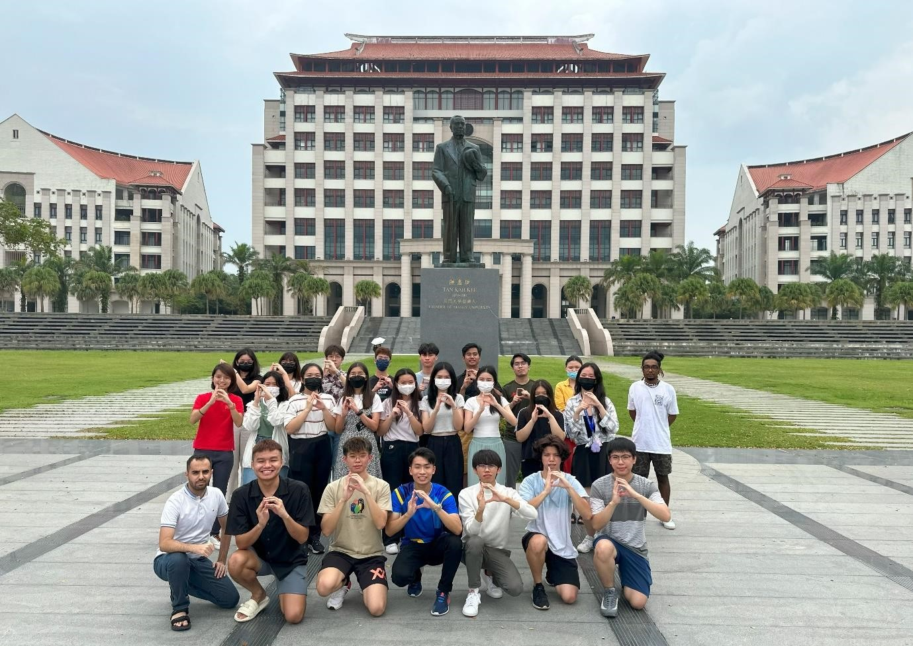
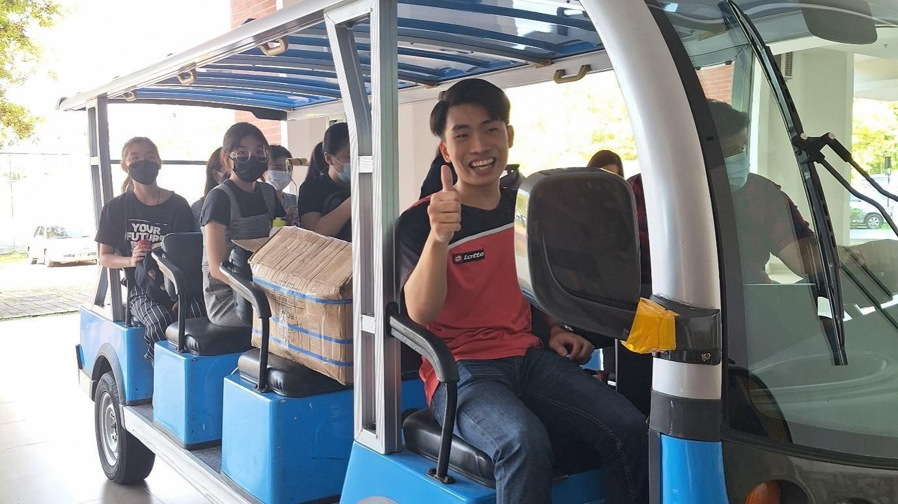
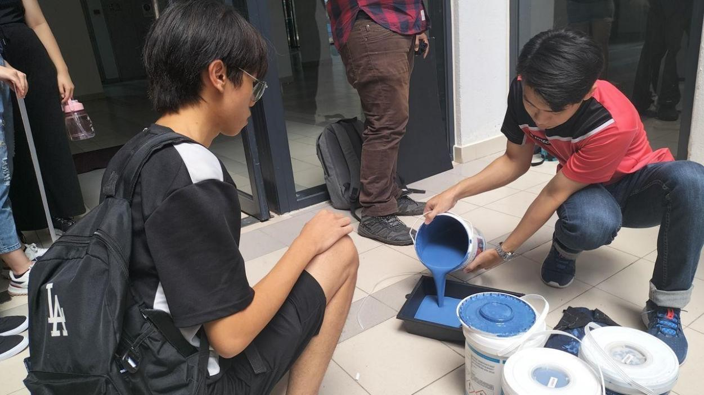
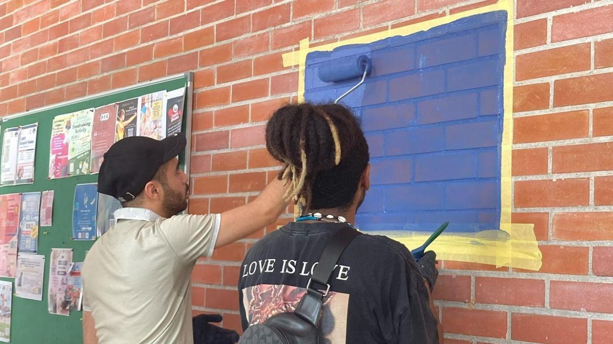
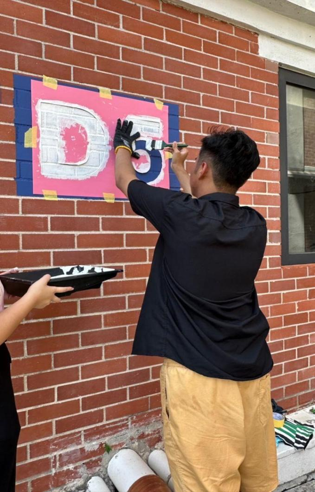
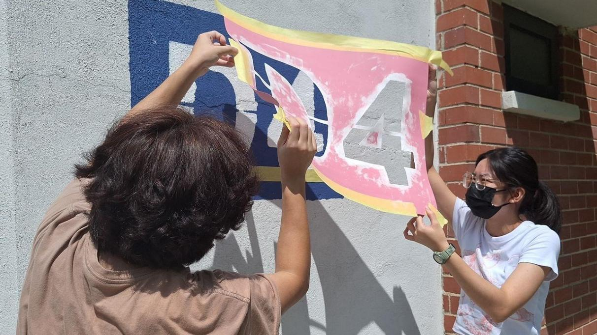
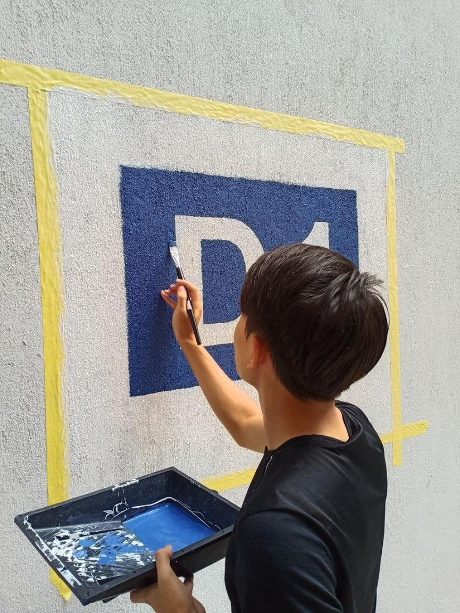
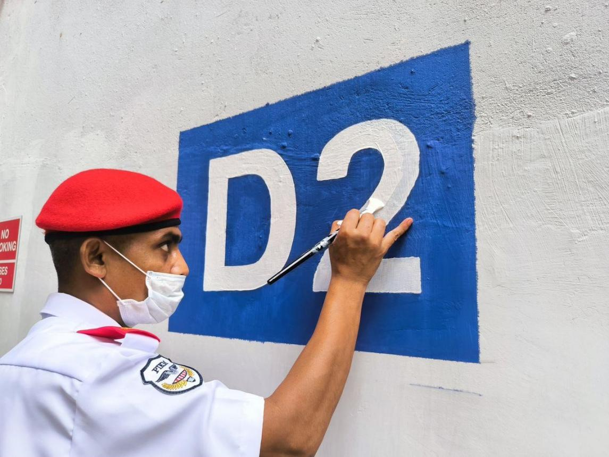
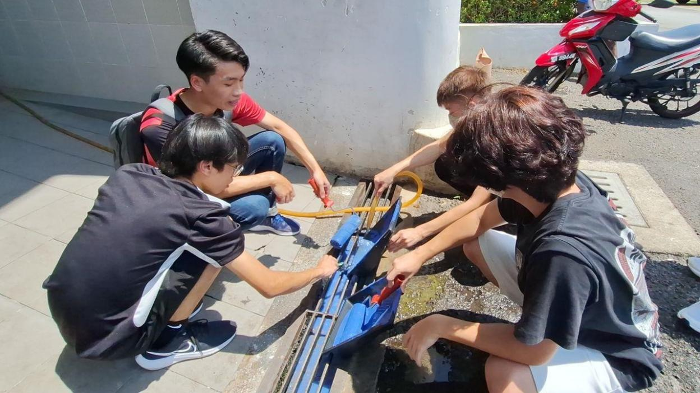
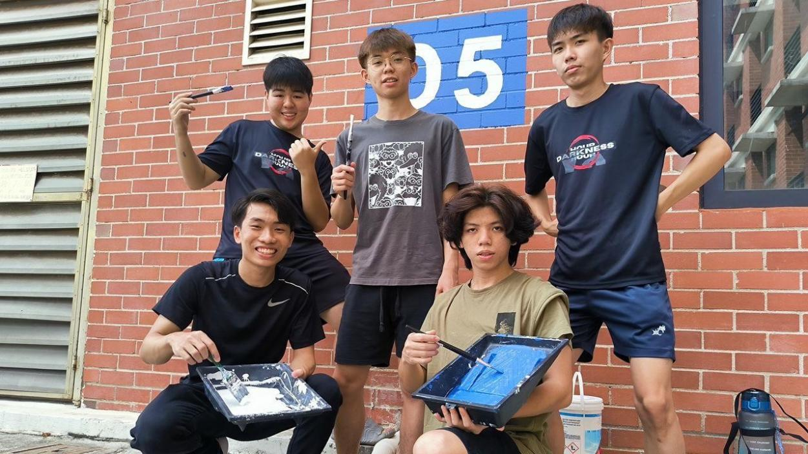

Improving campus navigation while creating a more organised living environment
The existing signage around the D-Block residential area was not sufficiently visible, creating navigation difficulties for new students and visitors who were unfamiliar with the campus.
Our community service team therefore proposed a signage improvement project that would make each residential block easier to identify while also enhancing the appearance of the surrounding campus environment.
Leading a 26-member cross-functional student team
As project leader, I coordinated a 26-member team organised across multiple functional groups, including publicity, sponsorship, logistics, design, photography and videography.
The leadership structure required clear delegation, coordination between sub-team leaders and continuous follow-up to ensure that planning, materials, communications and project execution progressed on schedule.
Planning & Direction
Defined the project direction, coordinated approvals and translated the overall objective into an executable work plan.
Team Coordination
Worked with assistant leaders and functional teams to allocate responsibilities and maintain progress across the project.
Stakeholder Management
Coordinated with the project advisor and Operations Management regarding approvals, site requirements, equipment and execution plans.
Execution Oversight
Supervised implementation, monitored team progress and coordinated follow-up work through project completion.
Converting a simple campus idea into an approved execution plan
Before implementation, the project required coordination with both the project advisor and university Operations Management to confirm feasibility, signage locations, work procedures, equipment requirements and execution timing.
As project leader, I helped guide the team through site investigation, signage measurement, approval discussions, work-procedure planning and preparation of the final execution structure before painting began.
Initial Proposal
Presented the project concept and obtained approval from the project advisor before progressing to operational planning.
Site Investigation
Inspected the D-Block area, reviewed the existing signage and measured locations to identify where improvements were required.
Operations Coordination
Worked with Operations Management to confirm signage design, implementation procedures, equipment availability and site requirements.
Execution Preparation
Finalised team allocation, equipment requirements, work timing and detailed responsibilities before the implementation phase.
Coordinating two implementation phases and final touch-up work
The implementation phase was carried out across two main painting sessions, followed by additional touch-up work to ensure that all signage across the D-Block area was completed to an acceptable standard.
As project leader, I coordinated work briefings, equipment distribution, group assignments and on-site supervision while resolving issues that arose during execution.
First Painting Session
Coordinated the first implementation session on 22 May 2023, where teams completed the background painting for the new signage.
Second Painting Session
Coordinated the second session on 29 May 2023, during which the teams completed the lettering and continued the signage installation work.
Quality Control
Formed a smaller touch-up team to correct and improve areas that required additional work after the two main execution sessions.
Final Completion
Completed the remaining touch-up work across D1–D6 by 2 June 2023, bringing the physical implementation phase to a close.
From preparation to final delivery
Selected moments from the project, covering team coordination, material preparation, signage painting and final implementation across the D-Block residential area.










Delivering a visible campus improvement and gathering user feedback
The completed project delivered two new signages for each residential block from D1 to D6, improving the visibility and appearance of the D-Block area.
After implementation, the team collected feedback and interviewed students to evaluate whether the project had improved navigation, visual appeal and awareness of campus responsibility.
Clearer Navigation
The new signage made individual D-Blocks easier to identify, particularly for students and visitors unfamiliar with the area.
Improved Appearance
Student feedback indicated that the completed signage was more visually appealing than the previous signage.
Community Engagement
The team used feedback forms, interviews and social-media communication to engage the wider student community throughout the project.
Completed Delivery
All planned signage across D1–D6 was completed, followed by a post-mortem review to assess performance and lessons learned.
Leading the project from planning through final delivery
As the project leader, I was responsible for coordinating the overall direction of the project, communicating with key stakeholders, organising the team structure and supervising implementation from planning through final completion.
My role involved both strategic coordination and operational follow-through, ensuring that approvals, work procedures, team assignments, equipment requirements and execution milestones were aligned throughout the project.
Project Planning
Presented the project concept, helped define the work procedure and coordinated the overall implementation plan before execution began.
Stakeholder Coordination
Worked with the project advisor and Operations Management to obtain approval, clarify site requirements and confirm equipment needs.
Team Leadership
Coordinated a 26-member team, delegated responsibilities across functional groups and monitored progress throughout the project.
Execution Supervision
Led work briefings, supervised the two main implementation sessions and coordinated additional touch-up work through final completion.
What this project demonstrates
This project demonstrates practical leadership experience in coordinating a 26-member team, managing multiple workstreams, engaging university stakeholders and translating a simple campus improvement idea into a completed physical outcome.
It also reflects experience in planning, delegation, stakeholder communication, on-site execution, quality control and post-project review.